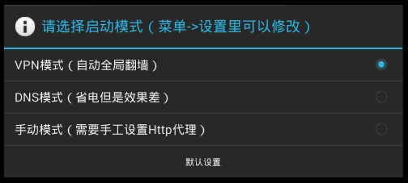
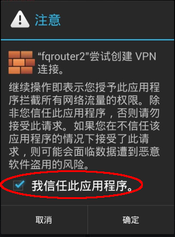

其实一年多以前，就有读者建议俺普及 fqrouter 这款工具。不过当时它还不太稳定性（有些兼容性的 bug），功能也不够强（当时还不支持“免ROOT”），也不知道它是否足够坚挺，所以俺一直在观望。如今这款工具已经比较稳定了，用户数也非常多了，它的“坚挺程度”也经受了考验（包括“六四的25周年”之际）。是时候写一篇普及性的教程了 :)
这是一款比较轻量级的 Android 系统翻墙工具，而且是开源的（代码库在“这里”），作者是天朝网友。
该工具的官网是 fqrouter.com（已经被墙），官方博客在“这里”，Google Play 应用商店的链接在“这里”（不建议直接从 Google Play 下载，原因后面会解释）。
该工具在2013年7月升级到 2.0 版本（所以也称为“fqrouter2”）。截至本文发布时，最新版本是“2.11.5”。
fqrouter 早就已经在 Google Play（安卓的官方应用商店）上架，链接在“这里”。
不过上面提到说：
fqrouter 的作者建议用户从“这里”下载最新版本。打开该链接之后，会看到几个镜像。然后你可以下载 fqrouter 的 apk 文件。
（本文刚发布的时候，此链接尚未被墙；本文发布一天后，读者反馈该链接已经被墙）
安装很简单，先把刚才下载的 apk 传到手机/平板上。在手机/平板上点击该 apk 文件，就进行安装了。装好之后，你到 Android 的应用界面就能看到 fqrouter 的图标。
顺便提醒一下：Android 的版本需要 4.0 或更高，才能“免 ROOT”使用。换句话说：4.0 之下的版本，一定要 ROOT；4.0 或更高的版本，可以 ROOT 也可以不 ROOT。
双击该图标就可以启动它。第一次启动可能会稍慢（它要进行一些初始化工作），然后会弹出一个对话框，让你设置启动模式。对于大多数网友而言，就用默认的“VPN 模式”好了。
 上述这个对话框只会出现一次，以后再启动 fqrouter 就不会出现了。
另外在 VPN 模式下，每次启动 fqrouter，Android 系统都会弹出如下警告，你只需勾选“我信任此应用程序”，并点“确定”既可。

启动好之后，打开手机/平板上的浏览器，随便访问某个撞墙的网站（比如：Youtube、Twitter、Facebook），只要能打开，就说明翻墙成功啦 :)
在 VPN 模式下，只要 fqrouter 能够找到可用的翻墙通道，那么你的 Android 系统中所有的软件都能翻出去。
fqrouter 的一大特色（亮点）就是：它可以共享翻墙网络，让你的手机/平板变成一个“翻墙路由器”——这也就是 fqrouter 这个名称的由来。
有了这个功能之后，你只需在某个手机/平板上安装 fqrouter，这台设备就变成“翻墙路由器”，其它的设备（包括 PC）都可以通过这个“翻墙路由器”联网。
由于该功能需要基于 Linux 的 iptables，所以手机/平板一定要 ROOT 才能使用该功能。另外，即使是 ROOT 的手机/平板，也【不一定都能】使用该功能，还要看Android 版本、硬件、驱动等其它因素（也就是说，ROOT 只是必要条件，不是充分条件）。
fqrouter 的作者写了一篇《无线中继启动的条件》，里面说得很详细，俺就不浪费口水了。
先放两张界面截图（一张中文，一张英文）。
为了省事儿，俺直接把作者博客上的一段说明拷贝如下。这段说明中的“Wifi Repeater”对应中文界面上的“无线中继”。
fqrouter 的作者提及该软件的设计思路是：让手机客户端软件依靠一堆“公共代理”来进行翻墙。由于“公共代理”通常都不稳定（随时可能被 GFW 封 IP），所以 fqrouter 必须考虑各种情况并进行相应处理，这导致了翻墙客户端的处理变得复杂，因此也比较耗电、耗流量。
以下摘自作者自述（链接在“这里”）：
本小节针对那些“很关注安全性（尤其是隐私性和隐匿性）”的网友。
刚才提到 fqrouter 的联网策略之一是——“只要能直连的都直连”。也就是说，如果某个网站没有被墙，基于 fqrouter 访问该网站等同于“直连访问”。这种情况下，该网站会看到你的“公网IP”。
fqrouter 依赖好几种不同的公共代理，其中也包括 goagent（属于 GAE 翻墙）。俺在《2014年5月翻墙快报》一文中有提到：所有的 GAE 翻墙方式都存在一些隐私方面的缺陷。
如果你手机/平板上的 fqrouter 正好用的是 goagent 作为代理，会增加隐私方面的风险。
如果使用 fqrouter 的“共享翻墙通道”的功能（基于 wifi 方式），由于 wifi 本身可能存在安全问题，所以这种玩法会增加安全风险。（关于 wifi 的安全问题，俺有空的话单独写一篇博文聊一聊）
如果你需要在网上进行一些非常敏感的操作（比如像俺这样，发表煽动颠覆朝廷的言论），强烈建议【不要】用 fqrouter。对于非常敏感的操作，俺再次唠叨一下：一定要用【多重代理】（最好是 TOR 加上其它前置代理），然后再搭配【双虚拟机】。这两个教程参见《如何隐藏你的踪迹，避免跨省追捕》系列博文。
GFW 是一群助纣为虐的程序员搭建的——这是天朝全体程序员的耻辱。俺希望有越来越多的程序员能够投身于翻墙事业，让 GFW 淹没在人民战争的汪洋大海之中。
如果你懂一些手机方面的软件开发，并且有志于翻墙事业，你也可以参考 fqrouter 的源代码（代码库的链接在本文开头已经给出），或许能从中有所借鉴。另外，fqrouter 的作者写了一篇文档，介绍该工具的整体架构（链接在“这里”）。
俺博客上，和本文相关的帖子（需翻墙）：
《如何翻墙》（传说中的扫盲教程，偶尔会更新）
《常见翻墙问题答疑》（传说中的 FAQ，偶尔会更新）
《获取翻墙软件方法大全》（教你在无法翻墙的情况下拿到翻墙软件）
《多台电脑如何【共享】翻墙通道——兼谈【端口转发】的几种方法》
《如何让【不支持】代理的网络软件，通过代理进行联网（不同平台的 N 种方法）》
《扫盲 VPN Gate——分布式的 VPN 服务器》
《关于 TOR 的常见问题解答》
《戴“套”翻墻的方法》
《自由門——TOR 被封之后的另一个选择》
《新版本无界——赛风3失效后的另一个选择》
《双管齐下的赛风3》
《扫盲 VPN 翻墙——以 Hotspot Shield 为例》
《简单扫盲 I2P 的使用》
★fqrouter 是啥？
这是一款比较轻量级的 Android 系统翻墙工具，而且是开源的（代码库在“这里”），作者是天朝网友。
该工具的官网是 fqrouter.com（已经被墙），官方博客在“这里”，Google Play 应用商店的链接在“这里”（不建议直接从 Google Play 下载，原因后面会解释）。
该工具在2013年7月升级到 2.0 版本（所以也称为“fqrouter2”）。截至本文发布时，最新版本是“2.11.5”。
★如何下载？
fqrouter 早就已经在 Google Play（安卓的官方应用商店）上架，链接在“这里”。
不过上面提到说：
Google Play上的无法在Android 4.4上免ROOT使用。
fqrouter 的作者建议用户从“这里”下载最新版本。打开该链接之后，会看到几个镜像。然后你可以下载 fqrouter 的 apk 文件。
（本文刚发布的时候，此链接尚未被墙；本文发布一天后，读者反馈该链接已经被墙）
★如何安装/使用？
安装很简单，先把刚才下载的 apk 传到手机/平板上。在手机/平板上点击该 apk 文件，就进行安装了。装好之后，你到 Android 的应用界面就能看到 fqrouter 的图标。
顺便提醒一下：Android 的版本需要 4.0 或更高，才能“免 ROOT”使用。换句话说：4.0 之下的版本，一定要 ROOT；4.0 或更高的版本，可以 ROOT 也可以不 ROOT。
双击该图标就可以启动它。第一次启动可能会稍慢（它要进行一些初始化工作），然后会弹出一个对话框，让你设置启动模式。对于大多数网友而言，就用默认的“VPN 模式”好了。
另外在 VPN 模式下，每次启动 fqrouter，Android 系统都会弹出如下警告，你只需勾选“我信任此应用程序”，并点“确定”既可。
启动好之后，打开手机/平板上的浏览器，随便访问某个撞墙的网站（比如：Youtube、Twitter、Facebook），只要能打开，就说明翻墙成功啦 :)
在 VPN 模式下，只要 fqrouter 能够找到可用的翻墙通道，那么你的 Android 系统中所有的软件都能翻出去。
★如何共享翻墙通道？
◇概念说明
fqrouter 的一大特色（亮点）就是：它可以共享翻墙网络，让你的手机/平板变成一个“翻墙路由器”——这也就是 fqrouter 这个名称的由来。
有了这个功能之后，你只需在某个手机/平板上安装 fqrouter，这台设备就变成“翻墙路由器”，其它的设备（包括 PC）都可以通过这个“翻墙路由器”联网。
◇先决条件
由于该功能需要基于 Linux 的 iptables，所以手机/平板一定要 ROOT 才能使用该功能。另外，即使是 ROOT 的手机/平板，也【不一定都能】使用该功能，还要看Android 版本、硬件、驱动等其它因素（也就是说，ROOT 只是必要条件，不是充分条件）。
fqrouter 的作者写了一篇《无线中继启动的条件》，里面说得很详细，俺就不浪费口水了。
◇具体操作
先放两张界面截图（一张中文，一张英文）。
为了省事儿，俺直接把作者博客上的一段说明拷贝如下。这段说明中的“Wifi Repeater”对应中文界面上的“无线中继”。
中间的黄色五角星代表运行了 fqrouter 的手机。向上的箭头变绿表示，手机已经翻墙成功了，连上了自由的互联网。默认使用的是公共代理，如果你自己有代理服务器可以进入 Settings 自己添加。支持的代理协议有：GoAgent， SSH， HTTP 代理，WEB VPN 以及 ShadowSocks。
左右两个箭头表示 fqrouter 可以让别的设备通过自己访问自由的互联网。但是，分享翻墙网络的前提是手机ROOT了。
Wifi Repeater的箭头会在 Wifi Repeater 启动之后亮起。它的做用是把翻墙网络用无线热点的方式分享出去。默认的用户名是 fqrouter，密码是12345678。与系统自带的无线热点的区别是，系统自带的无线热点启动之后手机自身的无线网络就断掉了。而 Wifi Repeater 可以保持手机自己仍然使用无线网络上网。但是，只有少数的手机支持 Wifi Repeater，如果启动失败不要意外。
Pick & Play 的箭头表明是否有设备正通过 Pick & Play的方式经过 fqrouter 翻墙。这个功能主要是为了给 Wifi Repeater 启动失败的用户准备的。它不用启动新的无线网络，而是扫描当前连接的无线网络中的其他设备，比如台式机，iPad 这些。然后点选之后会强制这些设备通过 fqrouter 所在的手机上网。对于被点选的设备没有任何要求，也不需要在这些设备上安装其他的软件。
如果以上两种分享翻墙网络的方式都失败了也不用泄气。只要手机 ROOT 了，翻墙网络可以通过系统自带的共享网络的方式分享出去。比如 USB，比如蓝牙，比如 3G 无线热点。对于一些特殊的 Android 设备，比如 tpmini 大眼睛这样的机顶盒，它系统自带了无线路由功能，可以把有线网络用无线热点的方式分享出去。这样只要启动了 fqrouter，机顶盒发射的无线热点也是翻墙的了。
★关于“耗电与耗流量”的问题
fqrouter 的作者提及该软件的设计思路是：让手机客户端软件依靠一堆“公共代理”来进行翻墙。由于“公共代理”通常都不稳定（随时可能被 GFW 封 IP），所以 fqrouter 必须考虑各种情况并进行相应处理，这导致了翻墙客户端的处理变得复杂，因此也比较耗电、耗流量。
以下摘自作者自述（链接在“这里”）：
fqrouter 的复杂性有：
只要能直连的都直连，实在不行了才走代理（因为重试了，所以流量更费）
一个代理挂了，切到另外一个代理再试一遍，每个连接最多切两次（因为切换了，所以流量更费）
goagent 公共代理，一个 appid 才1个G的流量，用完了就要刷新。（代理刷新需要耗费流量）
DNS 查询都是穿墙实现的，一个DNS服务器没响应就切换到另外一个（因为切换了，所以更费流量）
★关于“安全性”的风险
本小节针对那些“很关注安全性（尤其是隐私性和隐匿性）”的网友。
◇风险1
刚才提到 fqrouter 的联网策略之一是——“只要能直连的都直连”。也就是说，如果某个网站没有被墙，基于 fqrouter 访问该网站等同于“直连访问”。这种情况下，该网站会看到你的“公网IP”。
◇风险2
fqrouter 依赖好几种不同的公共代理，其中也包括 goagent（属于 GAE 翻墙）。俺在《2014年5月翻墙快报》一文中有提到：所有的 GAE 翻墙方式都存在一些隐私方面的缺陷。
如果你手机/平板上的 fqrouter 正好用的是 goagent 作为代理，会增加隐私方面的风险。
◇风险3
如果使用 fqrouter 的“共享翻墙通道”的功能（基于 wifi 方式），由于 wifi 本身可能存在安全问题，所以这种玩法会增加安全风险。（关于 wifi 的安全问题，俺有空的话单独写一篇博文聊一聊）
◇小结
如果你需要在网上进行一些非常敏感的操作（比如像俺这样，发表煽动颠覆朝廷的言论），强烈建议【不要】用 fqrouter。对于非常敏感的操作，俺再次唠叨一下：一定要用【多重代理】（最好是 TOR 加上其它前置代理），然后再搭配【双虚拟机】。这两个教程参见《如何隐藏你的踪迹，避免跨省追捕》系列博文。
★TO 有志于翻墙事业的程序员
GFW 是一群助纣为虐的程序员搭建的——这是天朝全体程序员的耻辱。俺希望有越来越多的程序员能够投身于翻墙事业，让 GFW 淹没在人民战争的汪洋大海之中。
如果你懂一些手机方面的软件开发，并且有志于翻墙事业，你也可以参考 fqrouter 的源代码（代码库的链接在本文开头已经给出），或许能从中有所借鉴。另外，fqrouter 的作者写了一篇文档，介绍该工具的整体架构（链接在“这里”）。
俺博客上，和本文相关的帖子（需翻墙）：
《如何翻墙》（传说中的扫盲教程，偶尔会更新）
《常见翻墙问题答疑》（传说中的 FAQ，偶尔会更新）
《获取翻墙软件方法大全》（教你在无法翻墙的情况下拿到翻墙软件）
《多台电脑如何【共享】翻墙通道——兼谈【端口转发】的几种方法》
《如何让【不支持】代理的网络软件，通过代理进行联网（不同平台的 N 种方法）》
《扫盲 VPN Gate——分布式的 VPN 服务器》
《关于 TOR 的常见问题解答》
《戴“套”翻墻的方法》
《自由門——TOR 被封之后的另一个选择》
《新版本无界——赛风3失效后的另一个选择》
《双管齐下的赛风3》
《扫盲 VPN 翻墙——以 Hotspot Shield 为例》
《简单扫盲 I2P 的使用》
版权声明
本博客所有的原创文章，作者皆保留版权。转载必须包含本声明，保持本文完整，并以超链接形式注明作者编程随想和本文原始地址：
https://program-think.blogspot.com/2014/07/gfw-fqrouter.html
本博客所有的原创文章，作者皆保留版权。转载必须包含本声明，保持本文完整，并以超链接形式注明作者编程随想和本文原始地址：
https://program-think.blogspot.com/2014/07/gfw-fqrouter.html